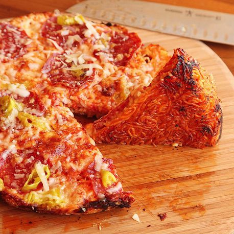

Ramen Pizza

Looking for some comfort food? Look no further than this pizza with a crunch!
A popular and recognizable comfort food ... but with the added crunch! The first of our three comfort foods features a mix of saucy, gooey, and cheesy goodness with added texture from Ramen, this dish is sure to hit the spot!
Ingredients
- 2 packages instant ramen noodles, noodles only
- 3 tablespoons extra-virgin olive oil
- 12 ounces grated mozzarella or Jack cheese
- 3/4 cup homemade or store-bought pizza sauce
- 2 ounces grated parmesan cheese, divided
- Toppings, as desired
Directions
- Adjust oven rack to center position and preheat oven to 450°F. Bring a large pot of salted water to a boil. Add noodles and cook, breaking them apart with tongs, until flexible but not completely softened, about 2 minutes. Drain carefully.
- Heat olive oil in a 10-inch cast iron skillet over medium heat until shimmering. Add noodles and press with the bottom of a spatula into an even later that completely covers the bottom of the skillet. Reduce heat to low.
- Spread half of mozzarella or Jack cheese evenly over noodles, then spread sauce, going all the way to the edge of the pan. Spread remaining mozzarella or jack on top along with half of parmesan. Top pizza as desired, then place in oven. Bake until top is browned and bubbly, about 20 minutes. Sprinkle with remaining parmesan. Allow to cool slightly, then use a thin metal spatula to loosen edges from skillet. Carefully slide pizza out onto cutting board. Slice, and serve immediately.
Back to Home page